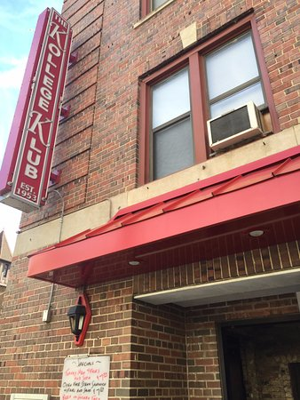

Here are the website owners top 10 bars of Madison.
Top 10 Bars:
- Kollege Klub
- Irish Pub
- Mondays
- The UU
- Chasers 2.0
- Whiskey Jacks
- Brats
- Plaza
- Church Key
- Scoonie Bar
Here you can find the top rated bars by user. We will also have the ratings for each bar pulled from yelp to help you make a decision. This page will be great for learning about bars if you are new to Madison, or are just looking to go somewhere new.
Here are the website owners top 10 bars of Madison.
Here we have the user rated top 10 bars. These will be inputs from our users and use the mean to determine the top 10.
Here I plan find a way to get some kind of input or list for the bars. I am not sure I will be able to do this and may have to come up with a different solution. Instead I could gather all the yelp reviews and just use that.
Lastly, we will have new bars each week here that is recommended. It will be a new bar that should be considered to go to. It will have the events, deals, description, and ratings.